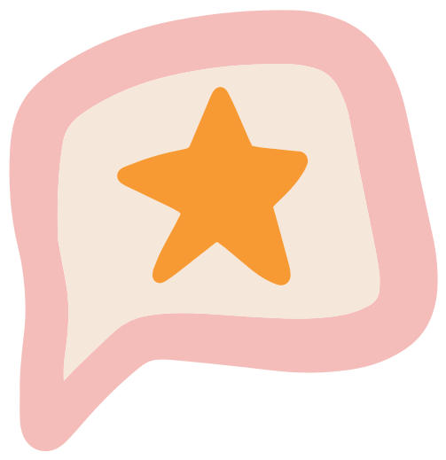

4 lecții
4 lecții

Nivel A2Jurnal deMisiuni
Descoperă misiunile
Misiuni


Abilități


Despre jurnal
Îmi documentez călătoria de învățare a limbii japoneze, de la A2 încolo. Hai să descoperim împreună limba și cultura Japoniei!
4 lecții

Nivel A2Îmi documentez călătoria de învățare a limbii japoneze, de la A2 încolo. Hai să descoperim împreună limba și cultura Japoniei!